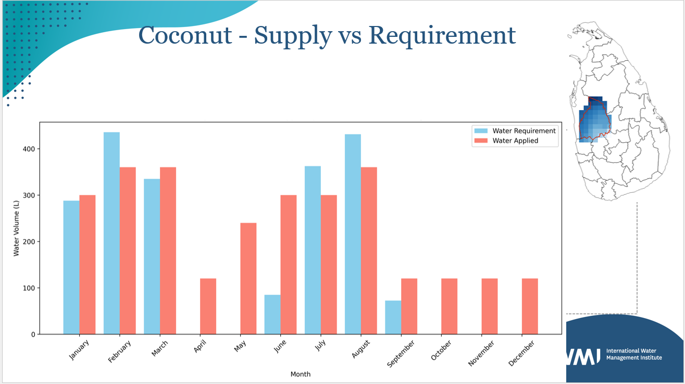
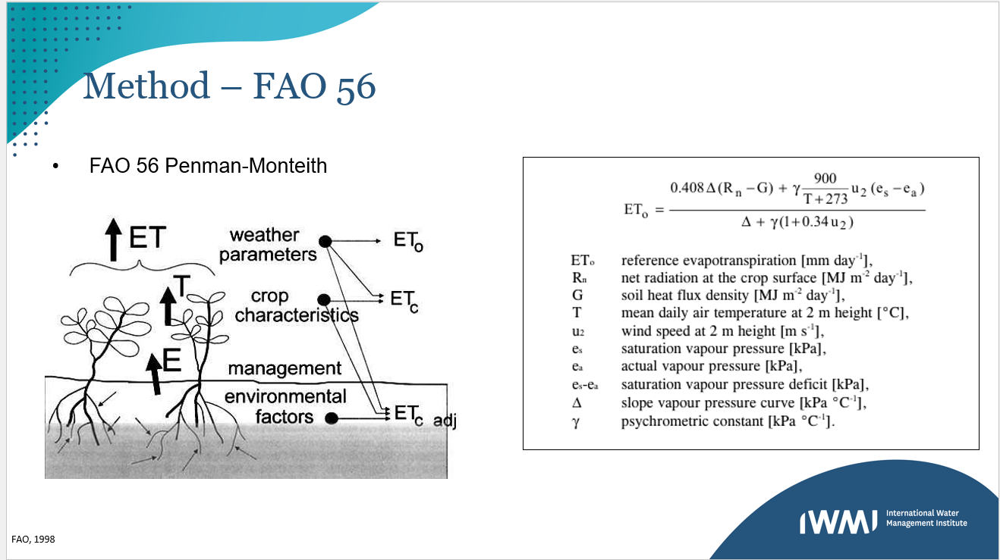
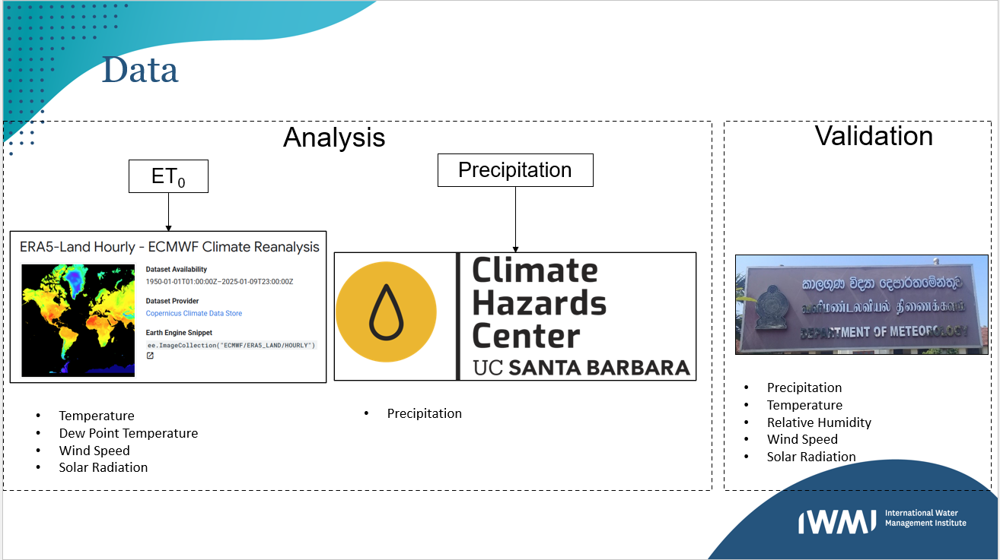
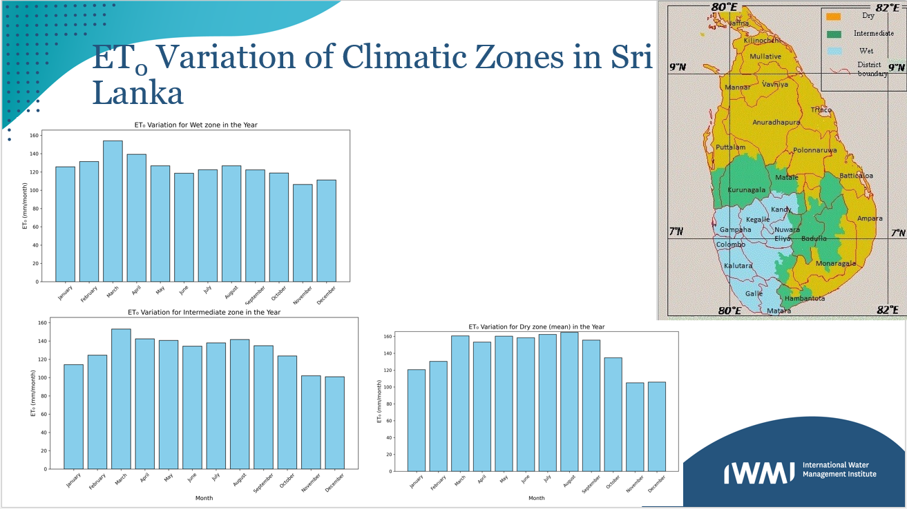
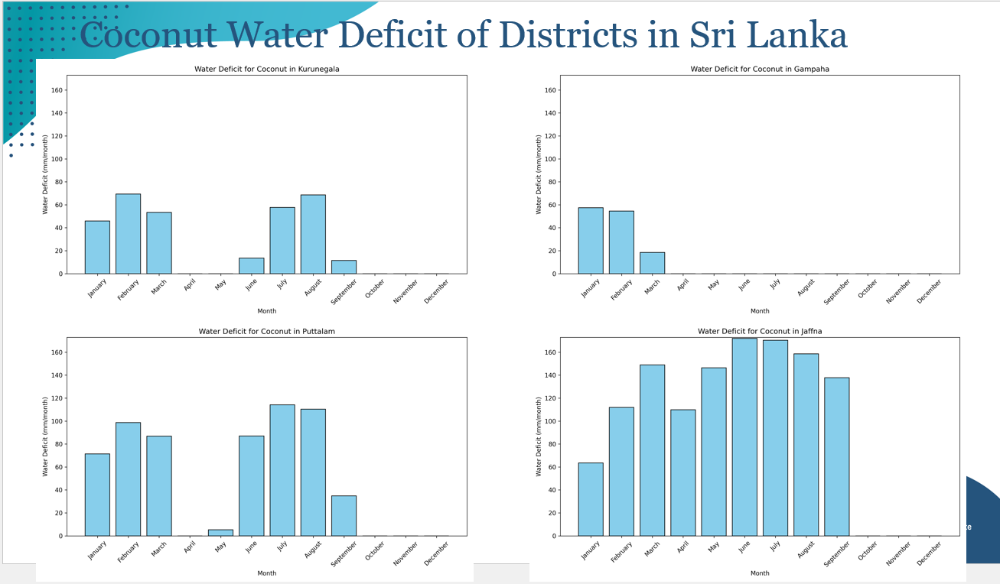
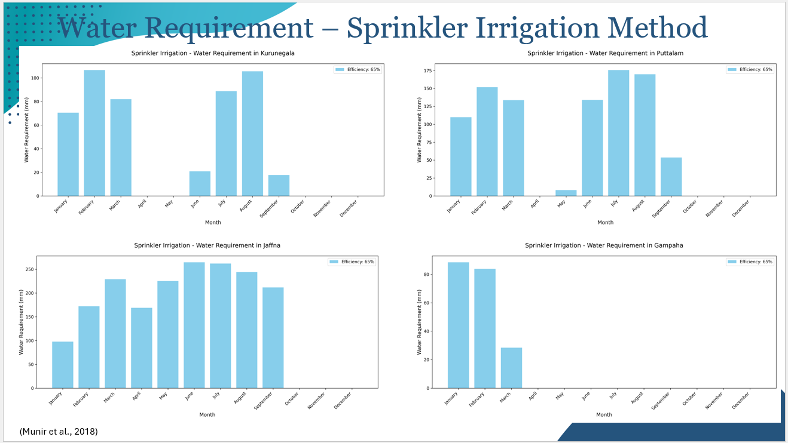
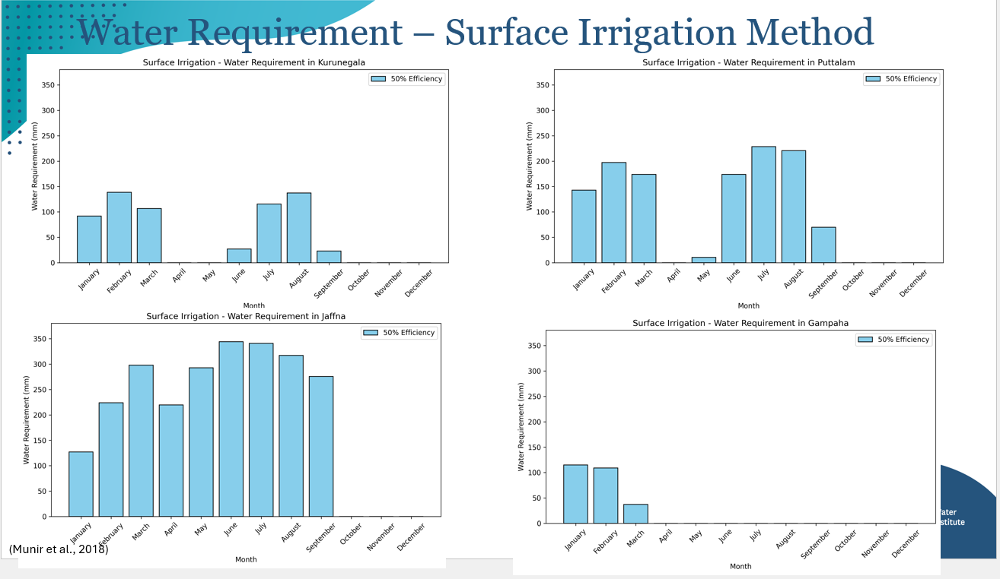
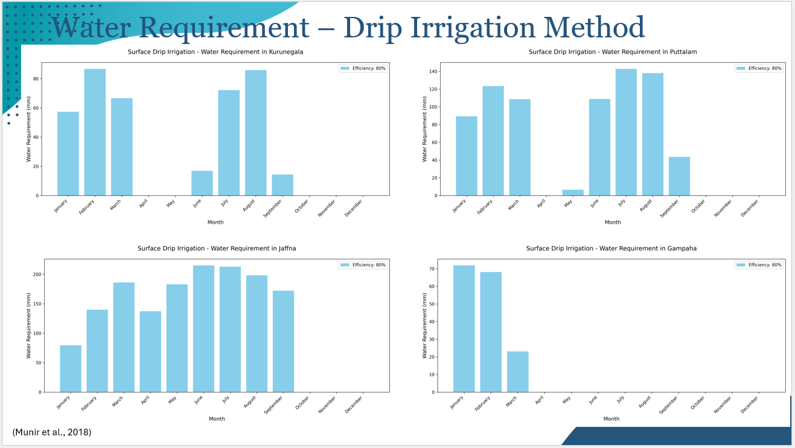

Overview
This research investigates water requirements for coconut cultivation in Sri Lanka, analyzing crop water demand versus available supply.
The study focuses on:
- Calculating crop water requirements
- Analyzing water deficit across climatic zones
- Comparing irrigation methods
Key Findings

- Significant water deficits identified in key coconut-growing districts
- Considerable variation in water requirements across climatic zones
- Current supply meets only 60-75% of requirements during peak periods
Methodology
Data Collection
- Precipitation data from satellite sources
- Meteorological data including temperature and humidity
- Validation with ground station measurements
Water Requirements Calculation
Reference evapotranspiration calculated using standardized methods:


Water Balance
- Water deficit calculated as difference between requirement and precipitation
- Analysis conducted at district level
Results


Irrigation Methods
Comparison of irrigation methods for coconut cultivation:



Recommendations
- Prioritize efficient irrigation systems
- Implement district-specific water management
- Enhance rainwater harvesting
Research Team
Supervised by Karthikeyan Matheswaran and Lal Mutuwatte